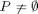
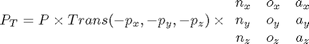
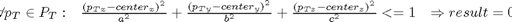

check_FF
Description: This function takes a transform and an ellipse definition and translates the points back to the original cordinate frame of the ellipse. Note the reason for this is because the ellipse has been translated because of the movement of the link of the robot which it encompases. This function simply returns true/false as to whether there are any points inside the ellipse in question. Note eventually I want to put in unknown points and an acceptable limit
Contents
Function Call
- Inputs: t (4*4 double) this is the transform of the arm, ellipse_vals (struct) holds the center and parameters of the ellipse points (3*m double) holds the points in space
- Returns: result (bin) =1 if ok, =0 if NOT ok
function result = check_FF(t,ellipse_vals,points)
Variables
if nargin<3 %import point from somewhere global workspace % Avoiding only indexed obstacle points points=workspace.indexedobsticles; % Suggested way to include unknown points since unknowncoords-knowncoords inludes obstacles % points=setdiff(workspace.unknowncoords(GetImpLevInfo(workspace.unknowncoords),:),... % workspace.knowncoords(GetImpLevInfo(workspace.knowncoords),:),'rows'); end %assumed there's nothing to collide with result=1;
As long as there are some points

if size(points,2)>0
Translate Points back to coordinate frame of ellipse

%we want to inverse translate the points IE leave the elispes where %they were to start off with and translate the world around them translated_points=[points(:,1)-t(1,4) points(:,2)-t(2,4) points(:,3)-t(3,4)]; translated_points=translated_points*t(1:3,1:3);
Check if there are points in ellipse

if ~isempty(find(((translated_points(:,1)-ellipse_vals.center(1)).^2)/ellipse_vals.params(1)^2+... ((translated_points(:,2)-ellipse_vals.center(2)).^2)/ellipse_vals.params(2)^2+... ((translated_points(:,3)-ellipse_vals.center(3)).^2)/ellipse_vals.params(3)^2<=1,1)) result=0; % THERE IS some point is inside end end